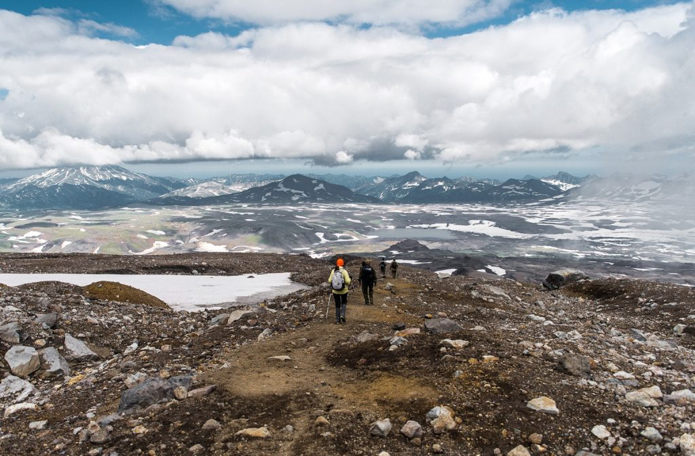
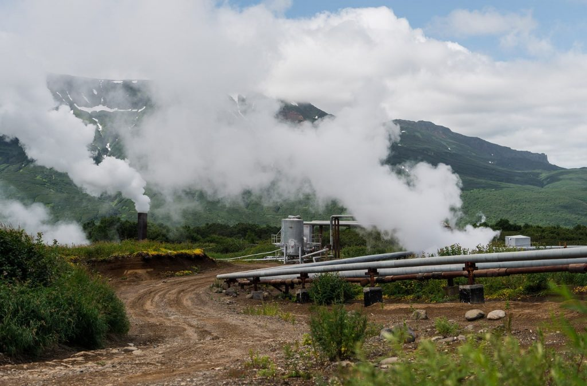
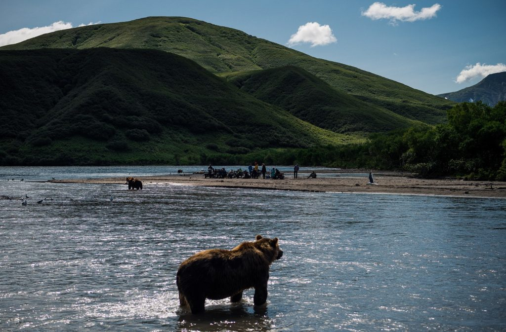
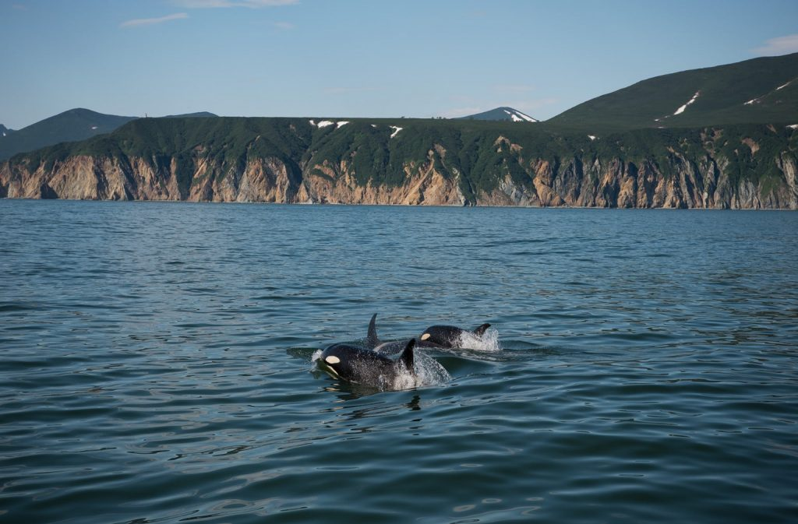

Home > Туры > Тур «Медведи, вулканы и косатки».
Тур «Медведи, вулканы и косатки».

В этом туре мы увидим все самое интересное в Южно-Камчатском федеральном заказнике.
Посмотрим, как рыбачат в Курильском озере медведи. Заглянем в кратеры двух действующих вулканов. А в завершение путешествия отправимся в небольшой круиз, чтобы в бухте Русской полюбоваться китами и косатками.
День 1-й. Здравствуйте!
Это время полностью посвящено вашей адаптации и отдыху. Все-таки 8 часов из Москвы до Петропавловска-Камчатского – не шутки. Первыми вас поприветствуют вулканы, Авачинский и Корякский. Сопровождающий встретит прибывающих в аэропорту и доставит в гостиницу.
Размещайтесь не спеша, путешествие начнется завтра.
День 2-й. Вулкан Горелый
С Мутновского плато стартует наше приключение на Камчатке. Именно в этом районе расположена одна из самых интересных с туристской точки зрения вершин высотой более чем 1,8 км. Мы поднимемся именно сюда, на вулкан Горелый.
Если вы путешествуете в июне, будьте готовы к длительному пешему переходу. Для тех же, кто попадет сюда в последний месяц лета, все несколько проще: вахтовка сможет подвезти нас достаточно близко к склону. Около полудня мы организуем небольшой перекус – достаточный, чтобы утолить утренний голод, но легкий, поскольку на полный желудок после плотного обеда достаточно трудно идти в гору.
Подъем по склону вулкана будет не слишком крутым. В основном мы будем перемещаться по застывшей когда-то лаве и шлаковым отложениям. Наша цель – пройти путь, соответствующий перепаду высоты 0,9 км. Это займет от 3-х до 4-х часов. После этого – долгожданный бонус! Перед вами откроется потрясающая панорама, и появится возможность сделать уникальные фотографии.
Далее – 11 кратеров. Да, именно столько их у Горелого. Ну и, конечно, небольшой пикник, как же без этого.

Мы стремимся так организовать это восхождение, чтобы все наши путешественники, принимающие участие в многодневном туре, смогли подняться до кратера. Ведь вы за этим идете, правда? В этом коренное отличие данной программы от однодневного похода, который выдвигается из Петропавловска-Камчатского. Там временной интервал, выделенный на достижение кратера, серьезно ограничен. И если по какой-то причине группа задерживается в пути, гид в целях безопасности может развернуть ее раньше, чем будет достигнута запланированная точка. Так экскурсанты смогут вовремя вернуться. В нашем же случае мы в любом случае доведем вас до цели.
На 3-х кратерах мы советуем заострить ваше внимание:
- «Активный», который поражает красивым рисунком минералов на склонах и непередаваемой игрой света;
- «Голубое озеро» с настоящей ледниковой водой, имеющей редкий бирюзовый оттенок;
- «Чаша» со знаменитым кислотным водоемом, который до 2011 г. представлял собой полноценное и очень опасное озеро, а сейчас (после извержения) жидкость ушла.
После того, как вы сполна насладитесь величием вулкана и красотой окрестностей, мы спускаемся к его подножию. Здесь, в базовом лагере, нас уже будет ждать приготовленный поваром сытный ужин.
Тут же мы и переночуем.
Но вряд ли вам захочется сразу уйти спать. Первая ночь на природе, бездонное звездное небо с четко различимым Млечным путем (в ясную погоду), разговоры у костра… Но усталость от впечатлений и целого дня физических нагрузок возьмет свое. И даже с учетом нового незнакомого места все путешественники уснут глубоким и спокойным сном.
День 3-й. Вулкан Мутновский
Просыпаемся, перекусываем, и лагерь переезжает к подножию следующего вулкана.
Мутновский известен своей активностью. Доступ в его кратер достаточно удобен. Стенки кратера с одной стороны претерпели разрушение и скрывают внутренний объем от случайных прохожих. Здесь едва ли не самая большая на Камчатке фумарольная площадка. И уже с достаточно большого расстояния вы увидите поднимающиеся из кратера фонтаны пара. Будьте готовы к тому, что по мере продвижения вверх по склону появится и будет усиливаться запах серы. Этот специфический признак свидетельствует о том, что вулканические процессы в кратере идут. А когда мы зайдем в саму чашу, в этом вы убедитесь лично: все клокочет, бурлит, дымится, пузырятся грязевые котлы и вздрагивает земля. У вас будет время не только полюбоваться пейзажем, но и поснимать.
Кстати, когда в определенный период года на скалы наползают ледники, можно увидеть абсолютно феерическое зрелище: «лед и пламень» сходятся в противостоянии. От вулканического жара кристально чистый голубой лед подтаивает, вода собирается в ручьи, которые, сливаясь, формируют речку Вулканную.
Полюбовавшись на все это великолепие, немного подкрепимся и выдвинемся вниз. Но дальнейший наш путь лежит не к палаткам. Мы пройдем по кромке Опасного (он так и называется) оврага к водопаду с тем же названием. Здесь «Вулканная» с 80-метровой скалы обрывается вниз, формируя шумный радужный поток.

А дальше – на ужин, в лагерь. Горячая еда нас уже будет ждать. И снова ночевка в палатках, костер и звезды.
День 4-й. Термальные источники
После утреннего приема пищи палатки сворачиваются, и мы переезжаем в гостиничный комплекс.
Здесь, в Апачах, мы целый день отдыхаем, наслаждаясь купанием в термальной воде (бассейн к нашим услугам). Нежимся в комфорте, даем расслабиться натруженным мышцам. Готовимся к завтрашнему переезду к Курильскому озеру, в направлении южной части полуострова.
Курильское озеро, по мнению большинства путешественников, одно из самых красивых мест на Камчатке. Не удивительно: ведь это не просто водоем, а затопленная кальдера древнего, сейчас спящего, вулкана. Площадь озера внушает уважение: более 76 кв. км водной глади. А почти в его центре находится обросший легендами остров с названием Сердце Алаида, где по местным поверьям происходят загадочные и необъяснимые вещи. Мистическую атмосферу этого «места силы» дополняют окружающие его три вулкана.
Идеальный интервал для посещения этого места – с последних чисел июля по середину сентября.
Именно тогда лососевые породы рыб мигрируют к местам нереста по рекам и ручьям, против течения. В конце концов они добираются до Курильского озера, которое по праву считается здесь крупнейшим местом нереста. И именно сюда за рыбными лакомствами приходят медведи – семьями, сотни особей одновременно.
Если повезет, увидим и огромную хищную птицу – белоплечего орлана, который тоже уважает свежую жирную рыбку. Здешнее вулканическое озеро – едва ли не единственное место, где можно свободно наблюдать представителя этого редкого вида, занесенного в «Красную книгу». Так что у вас есть редчайшая возможность наблюдать «в концентрации» самых интересных представителей Камчатской фауны на фоне непередаваемой красоты ландшафтов.
День 5-й. Преодолеваем самый сложный участок
Завтрак будет ранним, поесть постараемся поплотнее. Тайминг этого переезда максимально жесткий.
Он связан со временем приливов-отливов. Так что полноценно пообедать не удастся. Нам предстоит преодолеть 3 переправы. Первые две реки достаточно полноводные и заставляют очень внимательно подходить к их преодолению. Третью мы вообще будем переезжать вброд.
Двигаемся на север с Мутновского плато. Потом поворачиваем на запад и движемся до берега Охотского моря. Будет трясти (и достаточно долго), дороги здесь весьма условны. Это неудобство компенсируется удивительной сменой ландшафта. За несколько часов из вулканической пустыни местность постепенно превращается в зеленые луга, лес, а приближение к морскому берегу обозначит тундра.
Ну вот и море! Да, у Охотского особый и достаточно суровый характер. Погода переменчива, волны холодные и мощные. Яркий солнечный день может очень быстро смениться промозглым ветром и плотным туманом. Так что теплую одежду держите под рукой. Вдоль береговой линии мы проедем порядка 150 км. Те, кто будут путешествовать с нами в августе, увидят вживую работу рыбаков, которые с максимальной выгодой используют время нереста промысловой рыбы. Берег здесь достаточно пологий. Поэтому лежбища нерп, стаи крикливых морских птиц и прочую прибрежную живность можно будет увидеть только с почтительного расстояния.
К вечеру доберемся до Паужетки. В этом поселке построена геотермальная электростанция (первая в России). Ей мы, возможно, уделим внимание завтра. А сегодня размещаемся на обустроенной территории. Пока располагаемся в палатках и расслабляемся в термальном бассейне, готовится вкуснейший ужин. Дальше – ночлег.
День 6-й. Каменный городок или геотермальная электростанция
Программа этого дня напрямую зависит от погоды. Старший гид определяет порядок дальнейших действий только после ознакомления с актуальным погодным прогнозом. После чего мы либо выдвигаемся к Паужетской ГЕОТЭС, либо держим путь на Каменный городок.
Восхождение на сопку. К ее подножию нас подвозят машиной. Далее нас ждут причудливые каменные образования, которые за свою схожесть с древними творениями рук человеческих получили название «городок». Они,
действительно, очень напоминают практически разрушенный и давно покинутый город. Экскурсия, купание, рыбалка
Если погода не позволит подняться на Каменный городок, гуляем по Паужетке и идем на рыбалку. Мы «сдадим» вам самые рыбные места, а Тарас обучит вас своим фирменным приемам (они позволяют выловить рыбу уже после 3-го заброса). У вас обязательно получится! А рыбку забираем с собой, нам ее позже приготовят.
Теперь нас ждет экскурсия на местную ГЕОТЭС. Будучи построенной еще в 1966 г., она до сих пор работает и снабжает электроэнергией окрестную инфраструктуру. Специалист объекта объяснит нам, откуда здесь берется электричество, как все работает и куда идет выработанная энергия.
Перед экскурсией обязательно захватите все, что нужно для купания: у вас будет возможность понежиться в проточной воде Горячей речки, которая к тому же насыщена минералами. Очень необычные ощущения!
Под конец дня нас ожидает кемпинг.

День 7-й. Южно-Камчатский заказник и медведи
На машине доезжаем до границы заказника. Именно здесь находится то знаменитое Курильское озеро. Подхватываем местного инспектора и по подвесному мосту пересекаем реку Озерную. Далее движемся до центрального кордона, пройдя в общей сложности около 12 км. Почему не на машине?
В заповеднике любой автомобильный транспорт запрещен.
Дорога нормальная, так что пеший переход труда не составит. Мы затратим на него часа 3-4, в то время как наш багаж переместится на моторной лодке и окажется на стационаре раньше нас.
Поэтому на эту прогулку берите только минимально необходимый набор вещей. Нас ждут медведи! Гарантируем это на 100%.
Для безопасности ученых и путешественников кордон защищен от этих очаровательных хищников забором под током. А за ним вы увидите резвящихся на воле разновозрастных медведей, которые периодически переключаются на ловлю рыбы.
Обедаем здесь же, на территории. К нашим услугам платки. После чего в наших планах экскурсия по загороженному и защищенному мосту, вдающемуся вглубь медвежьих владений. Зверей здесь всегда хватает, поскольку рыба под мостом скапливается и становится легкой добычей для косматых.
Мишки будут, действительно, совсем рядом с вами. Поэтому необходимо соблюдать максимальную осторожность и выполнять все требования инспектора. Он расскажет о повадках зверей, о том, как учитывается идущая через заслонки под мостом рыба, развлечет историями из своей практики.

Вечером нас ожидает интереснейший документальный фильм о жизни медведей, на которых мы днем налюбовались вживую. Обратите внимание: электричество будет подано с 8 часов вечера до часу ночи. Так что озаботьтесь зарядкой своей техники.
День 8-й. Курильское озеро и снова медведи
Сегодня нас ждет экскурсия, на которой мы пройдемся по прилегающей к озеру территории.
Выберем один из маршрутов по согласованию с сотрудниками заповедника:
- посещение бухты Северной;
- река Хакыцин;
- прогулка на сопку Домашнюю;
- Сыпучка.
Что бы ни случилось, хотя бы один из этих маршрутов обязательно будет доступен для путешествия.
В качестве примера того, как может пройти этот день, расскажем о посещении бухты Северной. Это место интересно тем, что здесь одновременно можно наблюдать сразу за большим количеством медведей. Они ловят рыбу, дурачатся в воде, затевают возню за добычу. Обязательно фотографируйте! Больше такие кадры нигде в мире сделать не удастся! И просто наслаждайтесь близостью к природе и удивляйтесь, как в детстве.
Завтрак организуем ранний. Нас ожидают 2 часа пешим ходом до бухты, обязательно в сопровождении вооруженного инспектора. Учитывайте, что наезженных дорог здесь просто нет. А что есть? Медвежьи тропы, для которых, что суша, что ручей – все едино. Так что заранее озаботимся подходящей экипировкой: нужна непромокаемая одежда и соответствующая обувь, обязательно с расчетом на непогоду.
Этими звериными путями мы выйдем к озеру и пойдем по берегу до одной из впадающих в него речушек. Именно по ним и поднимается рыба, влекомая инстинктом, чем и пользуются мишки.
Иногда целыми семьями приходят. И в устьях этих ручьев у них каждый день – рыбный. Ручьи совсем не глубокие. Поэтому косяки рыбы пробираются по ним с огромным трудом. Но инстинкт размножения сильнее, так что не в силах преодолеть препятствие, рыба порой просто выбрасывается на берег.

Здесь мы пробудем несколько часов. Вы успеете налюбоваться пейзажами, устроить сногсшибательную фотосессию, отдохнуть. Дальше нас ждет обратная дорога на центральный кордон. Но время до темноты еще остается, поэтому остаток дня посвящаем наблюдению за мишками с защищенной территории стационара. Забор под током и специально оборудованные смотровые площадки защитят вас от любых неприятностей.
День 9-й. Кутхины баты и возвращение на Паужетку
Как обычно, вас ожидает ранний подъем. Нам нужно будет добраться до интереснейшего пункта нашего путешествия – к уникальному пемзовому образованию. Оно имеет своеобразное название Кутхины баты. Как и многие интересные объекты на Камчатке, этот также является продуктом вулканической деятельности. Пемза образуется в результате застывания лавы, отличается пористой структурой и малой плотностью. А местная разновидность еще и знаменита своим приятным кремовым оттенком.
Для коренных жителей этого края священное место Кутхины баты до сих пор сохраняет свой мистический смысл. В глубине каньона нередко случаются обвалы, ведь пемза – порода непрочная.
Так что слишком далеко углубляться запрещено в целях вашей же безопасности. Зато мы осмотрим окрестности, сделаем массу невероятных фотоснимков, а также совместную фотографию всех участников тура. Тем же путем выходим из заповедника, и уже вечером нас ожидает кемпинг.
Паужетка приветствует путешественников! Здесь мы с аппетитом поужинаем и с пользой проведем свободное время.
День 10-й. Переезд, купание в источниках, отдых в гостинице
Выдвигаемся в обратную дорогу. Наш путь снова пролегает по живописному побережью. Опять Охотское море преподнесет нам погодные сюрпризы и удивит суровыми пейзажами. Мы будем проезжать места, где уже побывали. Так что в этот раз переезд покажется менее длительным. Но все будет выглядеть уже несколько по-другому, так что скуки не предвидится.
На склоне дня нас ждет Апачинская гостиница. Здесь мы ужинаем, расслабляемся, отдыхаем. И конечно же, плескаемся в термальных источниках, чтобы усталость прошедших дней покинула нас окончательно.
День 11-й. Переезд в Паратунку
Нас ждет долгий переезд, так что приготовьтесь и помните о Камчатских дорогах. Во второй половине дня мы уже в Паратунке. Здесь у нас в программе свободный вечер, обмен впечатлениями и подготовка к завтрашнему дню. А он будет ну очень интересным, ведь нас ждет прогулка по морю!
День 12-й. Бухта Русская, морская прогулка
Этот день мы посвятим небольшому морскому туру. Он продлится ориентировочно 10 часов и станет для вас настоящим открытием. Ведь именно здесь можно будет вблизи увидеть косаток, сивучей и самых разных птиц. Это стоит того, чтобы лететь сюда через всю Россию.

В предыдущие дни мы с вами прошли и проехали Камчатский полуостров сначала на восток, потом свернули в сторону юга. С берега смотрели на суровое Охотское море. А теперь пришла очередь самого непредсказуемого и глубокого океана на планете. Мы поплывем на яхте, а вокруг, куда ни кинь взгляд, будут безбрежные океанские воды. Отправляемся с утра, идем по Авачинской бухте. Любуемся небом и волнами, слушаем манящие вдаль голоса чаек и направляемся к Трем Братьям. Именно они по легенде охраняют город. Вот мы уже вышли из бухты и сразу же оказались в неспокойных и мощных объятиях океана. На горизонте нам открывается вид на обрывистые берега полуострова. И мы в который раз восторгаемся невероятным разнообразием ландшафтов Камчатки.
Пройдем, придерживаясь очертаний восточного побережья. Остановимся у острова Старичков, который известен своими лежбищами нерпы, а также сивучей. Здесь же нас ожидают многочисленные птичьи базары. В том числе, на острове располагаются гнездовья редчайших белоплечих орланов – птиц гордых, красивых, но, к сожалению, исчезающих. Сложно представить, как эта уникальная экосистема помещается на столь небольшой по площади территории. Местность здесь заповедная, поэтому мы не будем высаживаться непосредственно на остров. Это строжайше запрещено.
Теперь наш путь лежит в бухту Русскую. Она достаточно удалена от цивилизации, поэтому здесь чаще всего можно увидеть китов и элегантных касаток. Место закрытое и рыбное, поэтому заплывают они сюда с завидной регулярностью. Так что мы с высокой долей вероятности рассчитываем их здесь застать.
День 13-й. История, рыбный рынок, сувениры
Нас ожидает увлекательная прогулка по Петропавловску-Камчатскому. Экскурсия по историческим местам будет невероятно увлекательной. Наш гид просто влюблен свой город и ему есть что рассказать.
Петропавловск – город морской. И мореплавателей повидал на своем веку немало. Беринг, Лаперуз, Крузенштерн, многие другие первооткрыватели и герои морских баталий посещали его. Мы обязательно побываем у памятников в центре города, которые увековечили достижения первооткрывателей и знаменитых на весь мир мореходов. Благодаря историческим местам вспомним о военных победах и славных временах. Скажем, о том, как в 1854 г. немногочисленные защитники города противостояли эскадре кораблей под английским и французскими флагами, выстояли и победили. Стратегически важный для Империи район остался за Россией на века. Об этой битве нам напомнит «Батарея Максутова» – монументальная экспозиция, расположенная на самом берегу.
Памятник «Курильскому десанту» расположился в центре города, в живописном сквере. Он вернет нас в 1945 год, когда шли бои за освобождение Курил. Этот монумент прославляет бойцов и офицеров, которые, не жалея себя, защищали нашу Родину. Именно сюда в День Победы торжественно возлагают цветы, именно здесь чествуют ветеранов.
А под конец экскурсии нам предоставится возможность увидеть невероятно величественную панораму города. Мы с вами поднимемся на Мишенную сопку, где оборудована смотровая площадка. Отсюда, с высоты, прекрасно виден практически весь Петропавловск, в поле зрения попадает и Авачинская бухта. А еще можно будет рассмотреть издалека домашние вулканы.
Словом, не пожалеете!
Наш дальнейший путь лежит на рыбный рынок. Это уникальное в своем роде место, где компактно собраны разнообразные дары моря во всех возможных пригодных в пищу вариациях. Обязательно прикупите вкусные презенты домашним, коллегам и друзьям. Под их непередаваемый вкус ваш рассказ об увиденных красотах Камчатки будет особенно впечатляющим!
День 14-й. До встречи!
Этот день завершает наше путешествие. Осталось обменяться контактами с новыми друзьями, по дороге в аэропорт сделать на память снимок у монумента «Здесь начинается Россия» и попрощаться.
Стоимость тура – 169 000 руб/чел.
В стоимость входит:
- Двухместное размещение в гостинице в городской части тура и в гостиничном комплексе Апачинские источники;
- Проживание в палатках на стационаре Курильского озера;
- Двухместное размещение на базе отдыха с бассейном в Паратунке
- Транспорт по программе;
- Питание на активной части тура. По многочисленным просьбам наших туристов в питание на маршруте мы добавили камчатские деликатесы.
- Работа гидов;
- Рекреационные сбора за посещение платных территорий;
- Базовое туристское снаряжение;
В стоимость не входит:
- Питание на базах отдыха в Паратунке (завтраки включены, обеды и ужины нет) и на Апачинских источниках (вы можете сами заказать его в кафе по меню);
- Страховка (обязательно)
Проживание на 2021 год в курортной зоне Паратунка запланировано в гостиничном комплексе “Лагуна” в двухместных номерах. В каждом есть душ, туалетная комната и все необходимое. На территории базы есть открытый бассейн с горячей термальной водой и хороший ресторан. Здесь мы проведем 4 ночи.